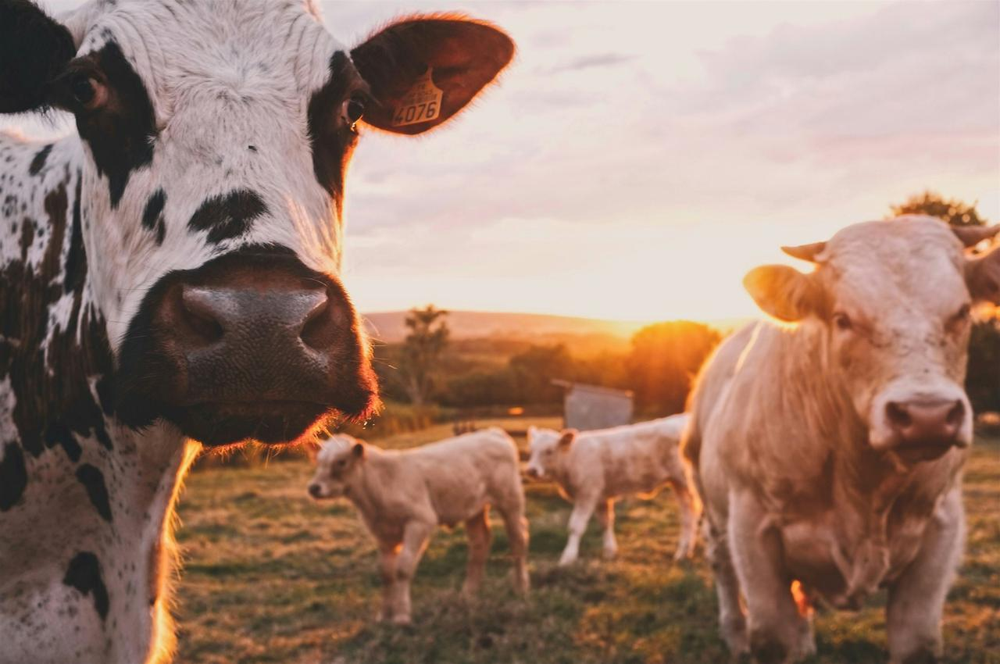
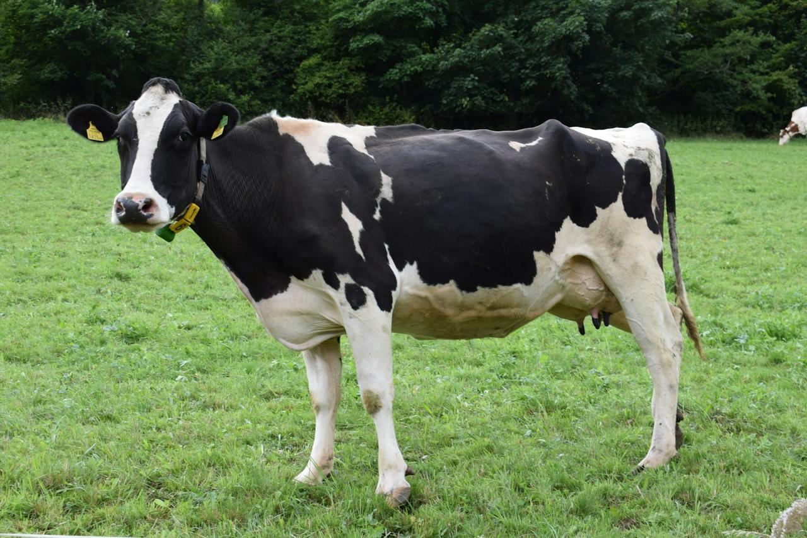

PRACTICAL DAIRY CONSULTING · PUNE, MAHARASHTRA
Better dairy.
Better decisions.
Clear, practical guidance for dairy farmers and dairy businesses. Start with your farm, understand the challenges and explore improvements that make sense for your operation.

Recommend what fits.
Good dairy decisions start with the right questions.
Farm operations · Productivity · Costs · GrowthHOW WE CAN HELP
Make your next dairy decision
with more clarity.
Every dairy operation is different. The right approach depends on your animals, facilities, people, costs and goals—not a one-size-fits-all checklist.
Farm operations
Review day-to-day processes, identify bottlenecks and prioritise practical improvements.
02Herd & productivity
Discuss herd management, milk production and the factors affecting performance.
03Costs & planning
Understand key operating costs and assess options before making investments.
04Setup & growth
Think through requirements and trade-offs when planning a new or expanding dairy.
The exact scope of support is agreed after an initial discussion and depends on the consultant’s relevant experience. Veterinary diagnosis and treatment should be handled by a registered veterinarian.

A CONVERSATION, NOT A SALES PITCH
Start with the challenge
you’re facing.
Whether you are planning a dairy, reviewing an existing operation or trying to understand where costs are rising, the first step is a straightforward conversation about your situation.
- Tell us about your farmYour current setup, goals and main concerns.
- Understand the optionsDiscuss what may be practical for your circumstances.
- Agree the next stepDecide whether further consulting support is a good fit.
MEET THE CONSULTANT
Shreekeshwar Singh
Connect with the consultant and view his professional background on LinkedIn.
YOUR FARM. YOUR QUESTIONS. A PRACTICAL WAY FORWARD.